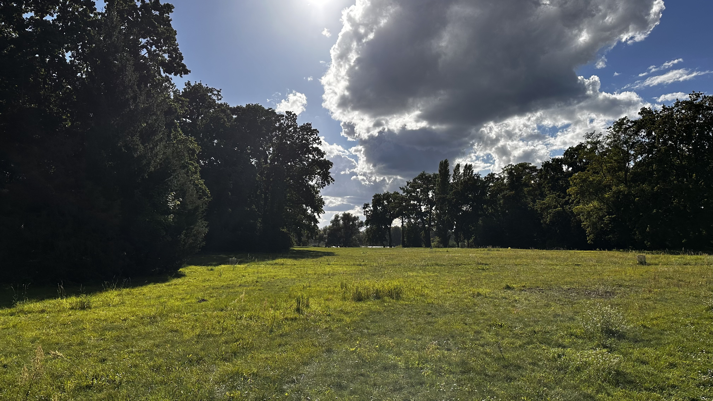

Uferweg Nord
5 Min. Fußweg. Panoramablick über den Tiefen See und die Havel. Perfekt für einen Spaziergang vor oder nach dem Picknick.
Mehr erfahren
Entspannung am Havelufer
Die Liegewiesen im Park Babelsberg bieten weitläufige Grünflächen mit herrlichem Blick auf die Havel. Perfekt zum Entspannen, Picknicken und Sonnenbaden an warmen Tagen. Besonders am späten Nachmittag, wenn die Sonne durch die alten Bäume bricht, entsteht hier eine magische Atmosphäre.
Große Wiesen südlich vom Schloss Babelsberg am Havelufer
Spätnachmittags für schönes Licht und weniger Besucher
Auf ausgewiesenen Liegewiesen erlaubt, Müll bitte mitnehmen
Hunde an der Leine willkommen
Radfahren nur auf asphaltierten Hauptwegen erlaubt
Nächstgelegene WCs ca. 10 Min. Fußweg entfernt
Die Liegewiesen im Park Babelsberg sind idyllische Plätze, die zum Verweilen und Entspannen einladen. Die weitläufigen Grünflächen befinden sich südlich des Schlosses Babelsberg direkt am Ufer der Havel und bieten einen wunderbaren Blick auf das UNESCO-Welterbe.
Die Liegewiesen sind ideal für Sonnenhungrige, die nach einem ruhigen Platz zum Entspannen suchen. Die Kombination aus Sonne und Schatten durch die alten Bäume bietet für jeden Geschmack etwas. Familien mit Kindern schätzen die geräumigen Flächen für Ballspiele und Picknicks.
Von den Liegewiesen aus haben Sie eine freie Sicht auf die Havel mit ihren Booten und Wasservögeln. Ein schöner Ort für Fotografen, die die idyllische Landschaft und die historische Architektur im Hintergrund einfangen möchten.
Die Liegewiesen sind Teil des UNESCO-Welterbes und unterliegen der Parkordnung der Stiftung Preußische Schlösser und Gärten (SPSG). Bitte achten Sie auf die Regeln, die unten detailliert beschrieben sind.
Picknicken ist auf den ausgewiesenen Liegewiesen erlaubt. Die großen Wiesen südlich vom Schloss und am Uferbereich sind ideal für ein Picknick. Bitte Müll mitnehmen – es stehen nur wenige Mülleimer vor Ort.
Grillen, Lagerfeuer und Gaskocher sind auf den Liegewiesen und im gesamten Park verboten. Dies dient dem Brandschutz und dem Schutz der historischen Anlage. Bußgeld ab 150€. Tipp: Kaltes Picknick vorbereiten.
Auf den Liegewiesen und historischen Sichtachsen ist Radfahren strikt verboten. Radfahrer dürfen nur auf den breiten, asphaltierten Hauptwegen fahren. Bußgeld bis 55€.
• Hunde an kurzer Leine (max. 1,5 m)
• Keine Musik mit Lautsprechern (nur Kopfhörer)
• Kein Zelten oder Übernachten
• Keine Ballspiele in der Nähe historischer Bauten
• Müll mitnehmen (keine Verpflichtung zur Verwendung der Mülleimer)
Decke, Picknick, Sonnenschutz, Müllbeutel, ggf. Getränke
Von April bis September bei schönem Wetter besonders beliebt
10-15 Min. Fußweg vom Haupteingang "Am Neuen Garten" oder vom Schloss Babelsberg
Am besten in den Morgen- oder Abendstunden für weiches Licht und weniger Menschen
Ideal kombinierbar mit Besuch des Uferwegs Nord, Matrosenhauses oder Flatowturm
Keine überdachten Bereiche – Alternativen im Schlossinnenhof oder Cafés in der Nähe
5 Min. Fußweg. Panoramablick über den Tiefen See und die Havel. Perfekt für einen Spaziergang vor oder nach dem Picknick.
Mehr erfahren
10 Min. Fußweg. Historisches Bootshaus am Havelufer aus dem 19. Jahrhundert. Interessante Geschichte und schöne Fotomotive.
Mehr erfahren
20 Min. Fußweg. 46m hoher Aussichtsturm mit 360°-Panoramablick über Park Babelsberg und Potsdam.
Mehr erfahrenDie vollständige Parkordnung der Stiftung Preußische Schlösser und Gärten (SPSG) ist an allen Eingängen ausgehängt und online verfügbar.
Vergleich ansehenRestaurants, Cafés und Imbisse direkt im Park und in der Umgebung finden Sie auf unserer Gastronomie-Seite.
Gastronomie-ListeÜber 1200 Parkplätze in der Umgebung des Parks. Empfohlen: Parkplatz "Am Neuen Garten" oder öffentlicher Nahverkehr.
Parkplätze finden